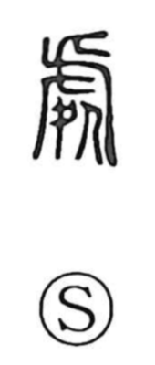

処

Kun: oru, tokoro, oku | On: sho
place ・ to be ・ to put ・ to handle ・ to decide ・ to treat
Explanation
The original form is 處, combining 虎 and 几. Here 虎 does not depict the animal itself but a person clad in a tiger skin, seated on a low stool (几) in solemn guise—a ritual posture assumed before battle to pray for victory. From this image of a disguised, composed figure sitting with dignity, the character came to mean “to be in a place.” Bronze inscriptions write phrases such as 處宗室, “to be in the ancestral hall,” which anchor the sense of dwelling or being present in a sacred precinct. From “to be (there)” it broadened to “the place where one is,” and further extended to actions related to arranging and settling things: to put or set in place, to handle or deal with matters, and to decide or fix a course.